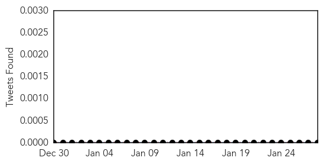
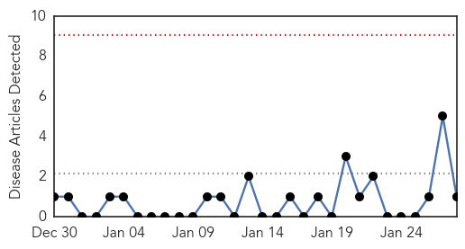

Meningitis
30-Day Web Trend
0 alerts, 0 warnings
30-Day Twitter Trend
0 alerts, 0 warnings

Article Locations

Article Confidences
Top Articles:
- 0.982
- US child virus cases worry doctors
- 0.980
- Nova Scotia to vaccinate against meningitis strain that killed Sackville teen - Halifax
- 0.940
- More than 45 people to receive meningitis vaccine: Capital Health
- 0.738
- Family calls for new vaccine to be used
- 0.707
- Kingwood High sends letter home after student preliminarily diagnosed with form of Meningitis
Top Tweets:
-
No tweets found for Jan 28, 2015
Pertussis
30-Day Web Trend
0 alerts, 0 warnings

30-Day Twitter Trend
0 alerts, 0 warnings

Article Locations
Article Confidences

Top Articles:
Top Tweets:
-
No tweets found for Jan 28, 2015